Las herramientas de cms-stirpe y labs-quac pasan a un solo sistema
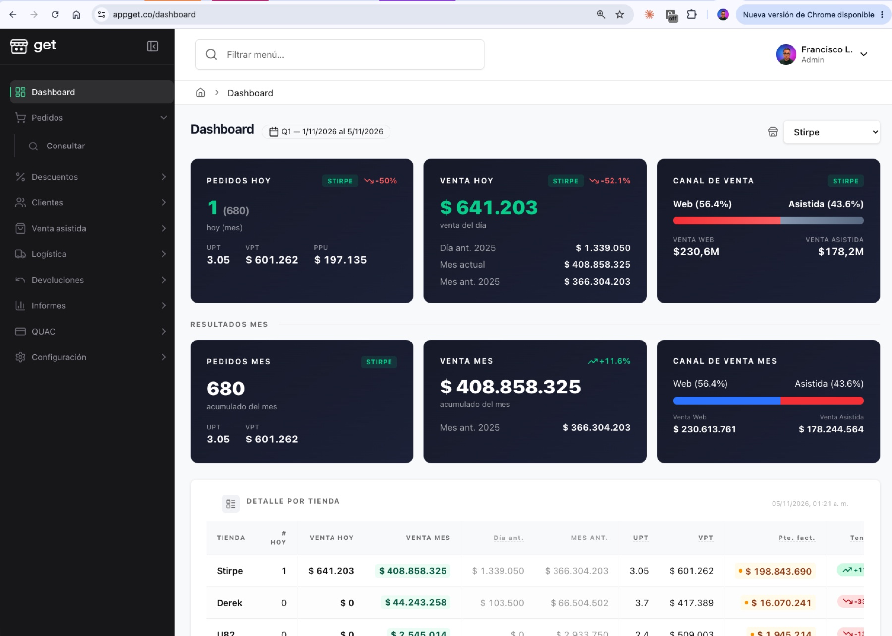
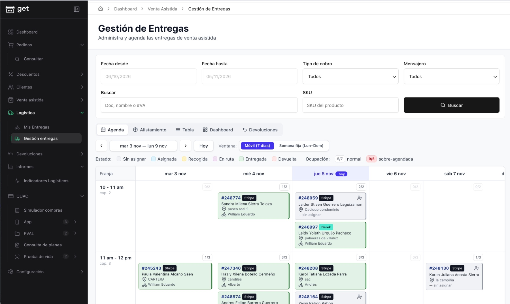
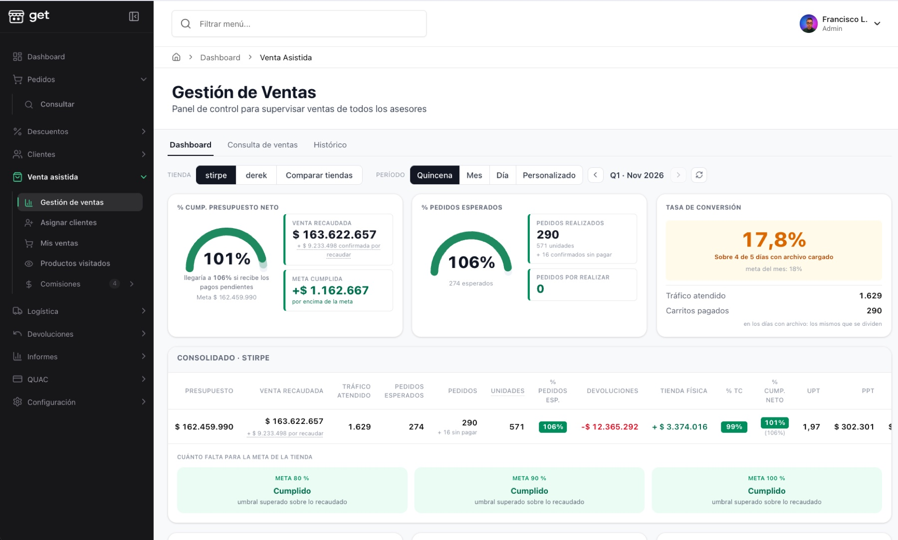
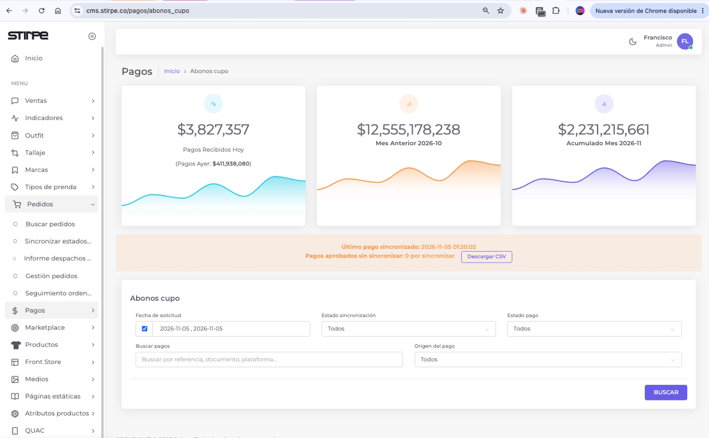
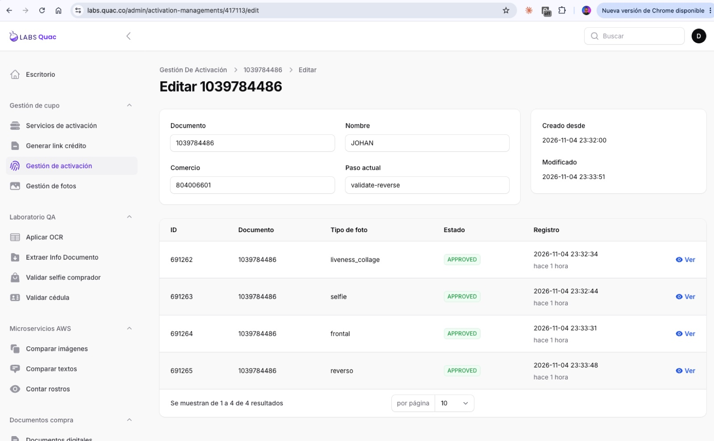
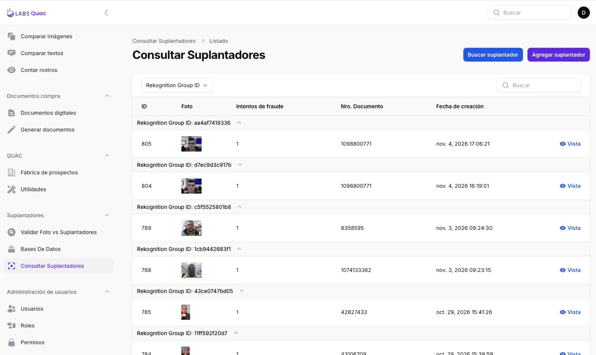
Busca al cliente y mira en qué proceso está, dónde se quedó y qué puedes hacer para que siga. Ver mockup ↗
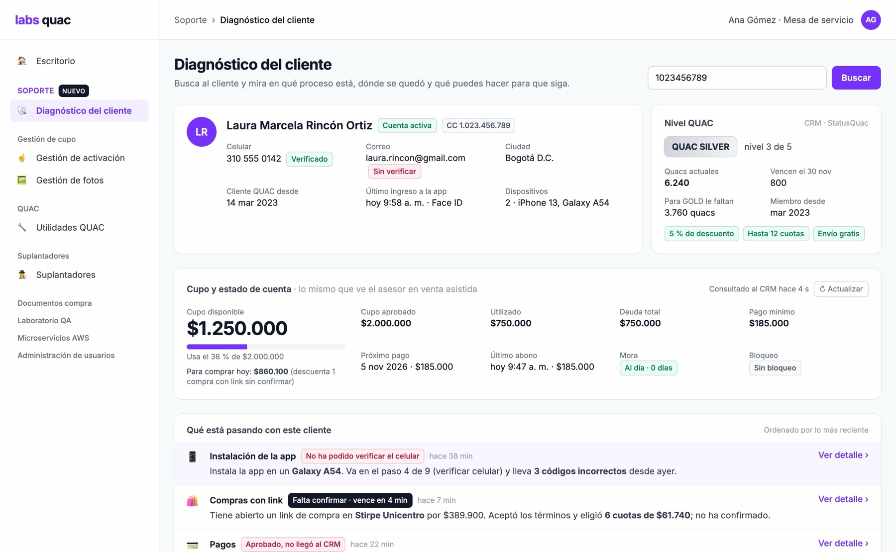
Las estrategias configuradas en el módulo Customer Retention del ERP pasan a GET como promociones y llegan a cada cliente por Infobip.
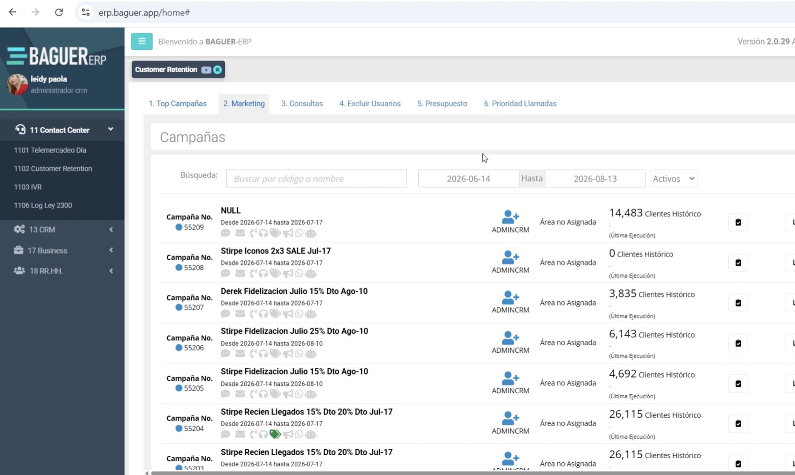
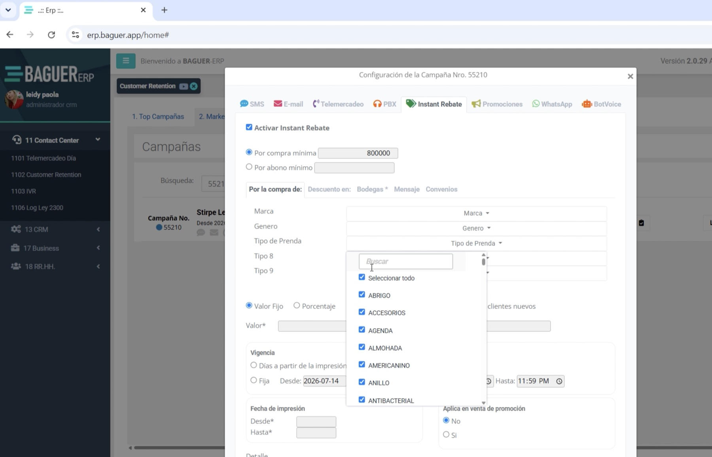
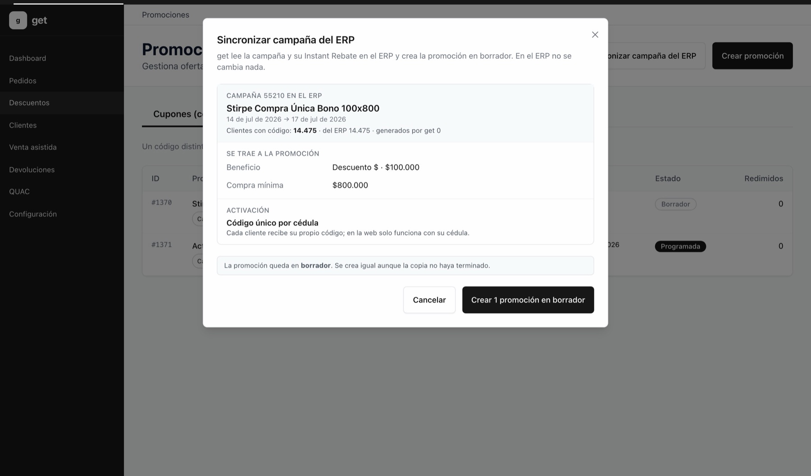
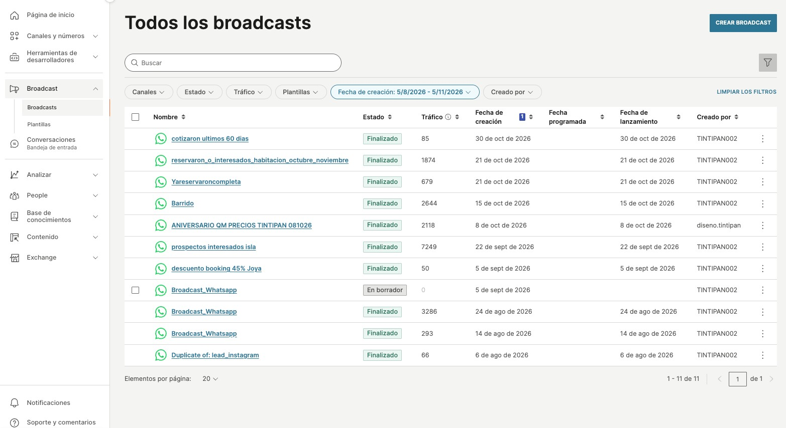